Transfer SRCs
This guide has step-by-step instructions to transfer Stormwater Retention Credits (SRCs) to a new owner using DOEE's Surface and Groundwater System (SGS).
Please note that if you are not the site owner/SRC owner, you'll need to request to be an agent of the site owner/SRC owner.
1. Create a New Transfer SRCs Form
If you want to edit an existing Transfer SRCs form, skip to Edit an Existing Transfer Form. Otherwise, complete this step.
Log in to the SGS. On the SGS home screen, click Erosion, Stormwater, Green Area Ratio and Floodplain, then click My SRCs and Offv. Click Transfer SRCs to open a new Transfer SRCs form.
Skip to Step 3.
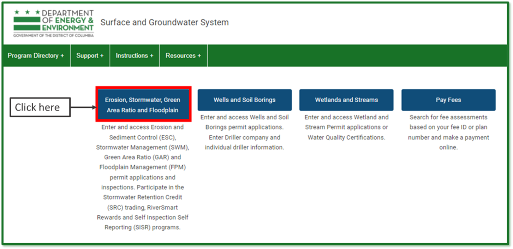 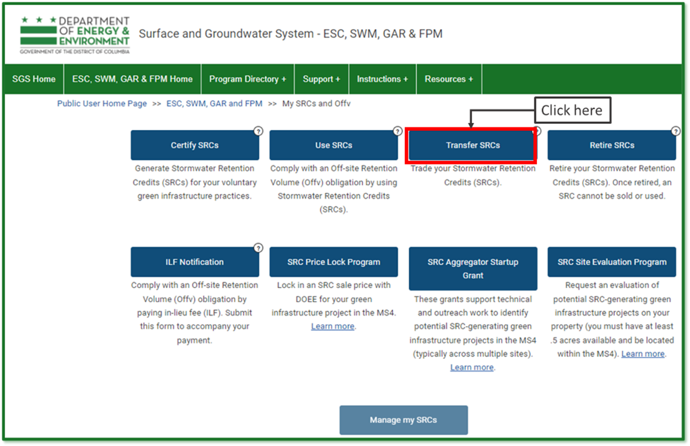
2. Edit an Existing Transfer Form
If you have already started a Transfer SRCs form but have not submitted it yet, log in to the SGS and click Erosion, Stormwater, Green Area Ratio and Floodplain, then My SRCs and Offv. Do not click the button Transfer SRCs.
Scroll down to the section called SRC Transfer Applications. This is where all your in- progress and complete SRC Use forms will be listed. Click the pencil icon next to the form you want to edit.
Note: If you click the Transfer SRCs button, it will start a new form instead of opening an existing one. If this happens, simply click Cancel to exit and remove the new form.
 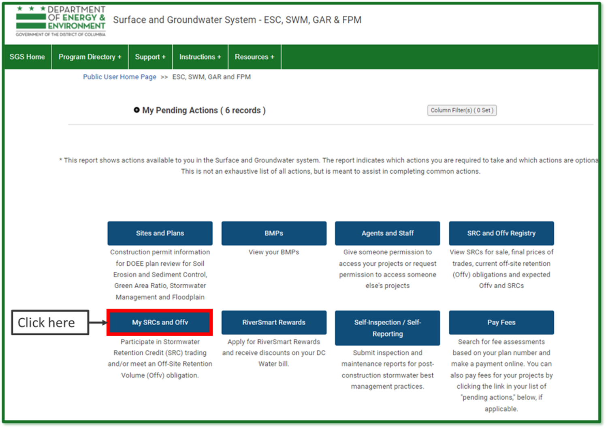
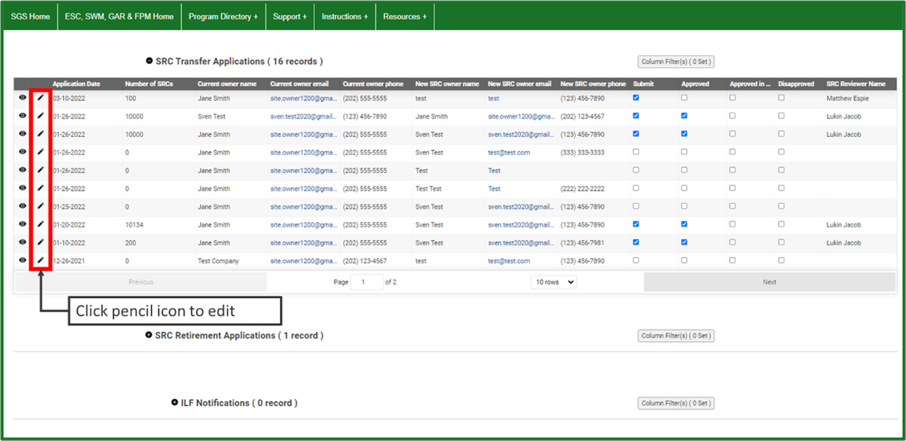
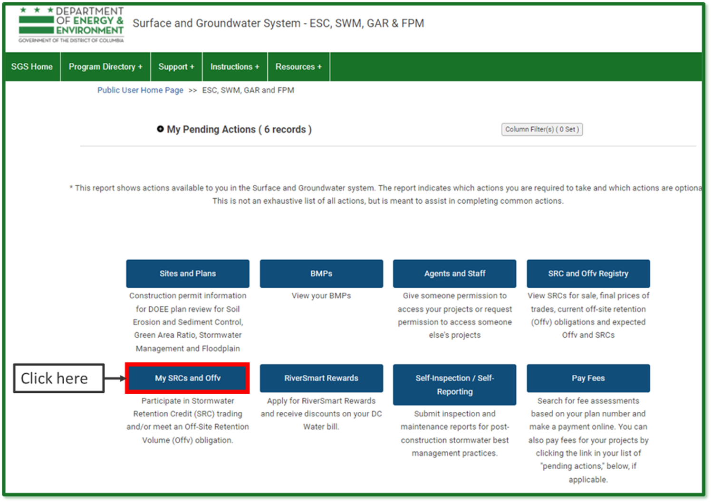
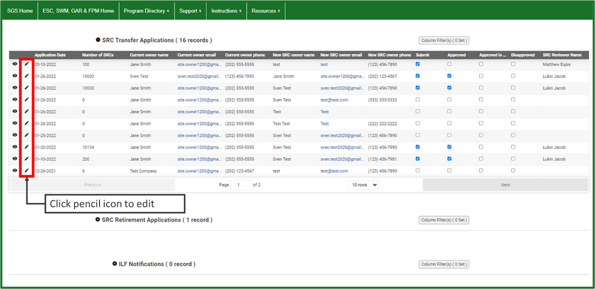
3. Confirm the Date to Transfer the SRCs
If you want the SRCs to be transferred on a specific date instead of the date when DOEE receives and processes the transfer, complete this step. Otherwise, skip to Step 4.
Go to the General Information section.
The field Application Date will default to the date you created the application.
If you want the SRC transfer to happen on a different date, enter the date you want the transfer to happen in the field Date of Transfer if different from application date.
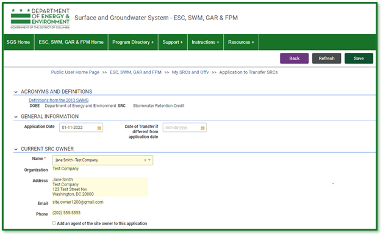
4. Enter the Current SRC Owner
Go to the Current SRC Owner section. If you are the current SRC owner, select your name in the Name field. Your contact information will populate automatically.
If you [are not]{.underline} the current SRC owner but are submitting the transfer as their agent, enter the current SRC owner's name in the Name field. Then check the box Add an agent of the site owner to this application and enter your name in the Agent Name field. All contact information will populate automatically.
Note: You need to have an agent relationship set up with SRC permissions in order to complete the transfer as an agent of the SRC owner.
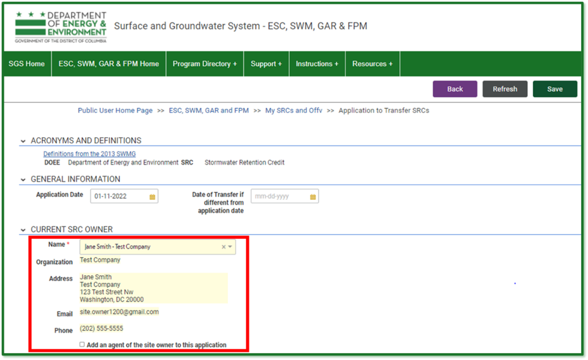 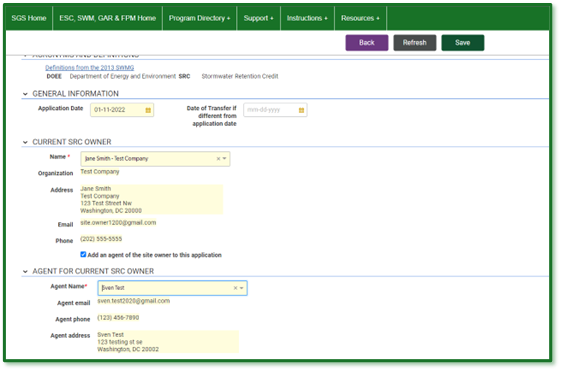
5. Enter the New SRC Owner
Go to the New SRC Owner section and enter their name and contact information. Required fields have a red asterisk (*).
Click Save. 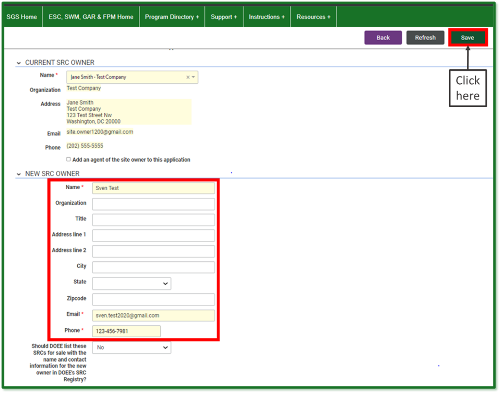
6. Select the SRCs to Transfer
Go to the SRCs section. Click the button Select SRCs to Transfer. The page will display a list of all SRC ranges that you could transfer with this application. These are the current SRC owner's unused SRCs.
Go to the row for the first range of SRCs you would like to transfer and click the button Transfer SRCs from this range.
Enter the Number of SRCs to transfer from this range and the Sale price per SRC. When complete, click Return to application. If prompted, click Save.
Repeat this step for each range you would like to use, until you have selected all the SRCs you want to transfer.
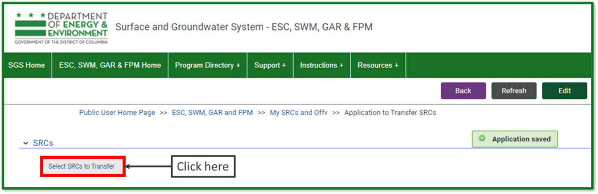 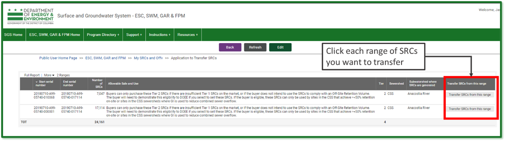 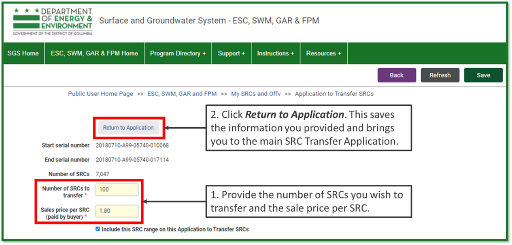
7. Sign and Submit Application
Click the button Review, Sign, and Submit. You may need to scroll to see it.
Note: If you need to change the number of SRCs or the sale price, click Edit at the top of the form and overwrite the values in the report. If you do not want to transfer the SRCs, uncheck the box Transfer.
Review your application and click Edit to make any needed changes.
Click Sign and Submit Application. You may need to scroll to see it. Read the signature statement and type your name in the Signature field. Click Submit.
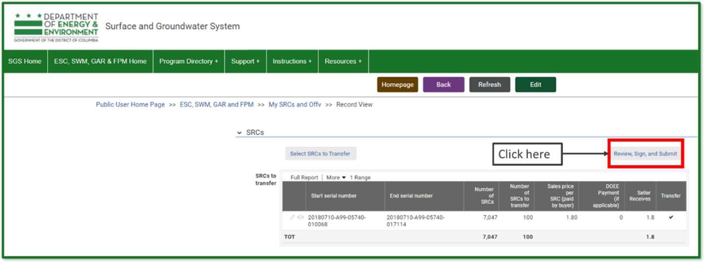 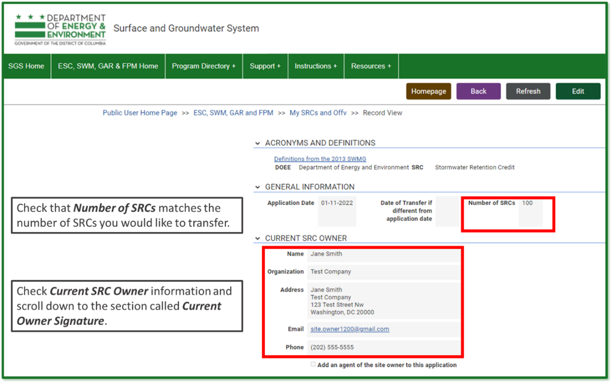 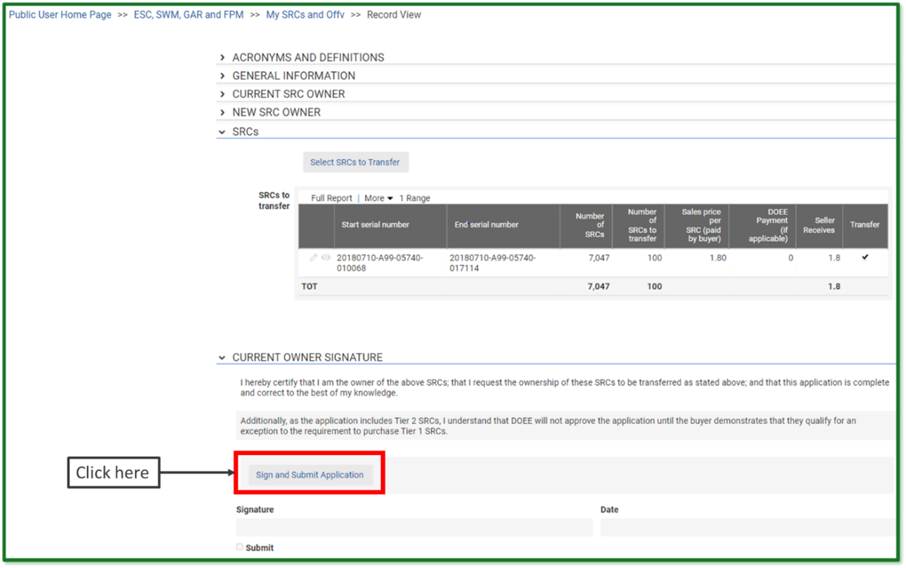 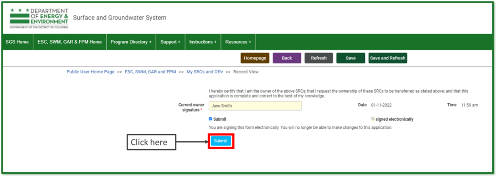
Your saved application should look like this: 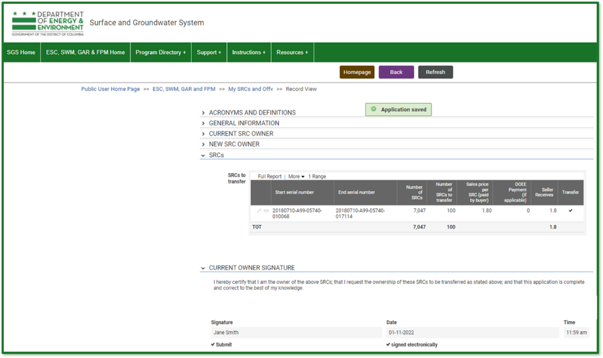
DOEE will review your application and send you an email notification to confirm that the application is "approved," "approved in part," or "disapproved."
If your application is "approved," DOEE will transfer the SRCs to the new owner, and you will no longer own them. You will no longer be able to transfer, use, or retire these SRCs.